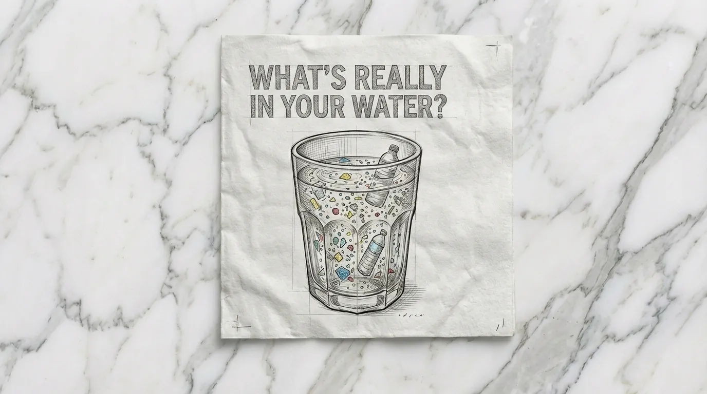
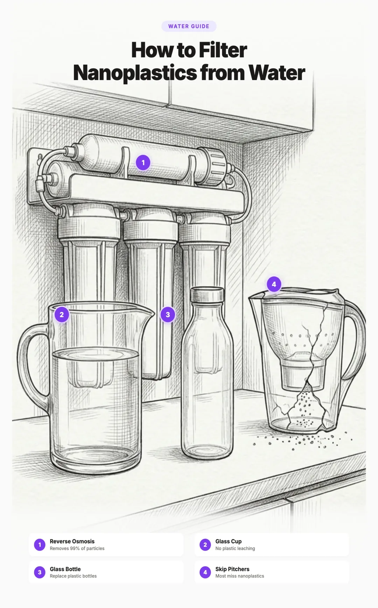

Can Nanoplastics Be Filtered Out of Water?


The Short Answer
Yes, nanoplastics can be filtered out of water, but most household filters cannot do it. Standard pitcher filters, faucet filters, and refrigerator filters let nanoplastics pass right through. The particles are simply too small.
Only two filtration methods reliably remove nanoplastics from drinking water:
- Reverse osmosis (RO) removes approximately 99.9% of nanoplastics. Its membrane pores are 0.0001 microns, thousands of times smaller than the tiniest nanoplastic particle.
- Nanofiltration (NF) removes approximately 99% of nanoplastics with membrane pores of 0.001 microns.
Everything else, including Brita pitchers, PUR filters, and most faucet attachments, has pore sizes too large to stop nanoplastics. A few advanced carbon block filters offer partial reduction, but nothing close to what RO achieves.
The rest of this article explains why nanoplastics are so difficult to filter, what the latest research says, and which specific products actually work.
What Makes Nanoplastics So Hard to Filter
Nanoplastics are plastic particles smaller than 1 micron (1,000 nanometers). To put that size in perspective:
- A human red blood cell is about 7 microns. Nanoplastics are smaller.
- A strand of hair is roughly 70 microns. You would need at least 70 nanoplastic particles lined up to span the width of a single hair.
- A standard Brita filter has pore sizes around 10 to 50 microns. Nanoplastics slip through those gaps like sand through a chain link fence.
The filtration challenge comes down to one thing: pore size. A filter can only block particles that are larger than its pores. Most consumer water filters were designed to remove sediment, chlorine taste, and at best, some microplastics (which are 1 micron to 5 millimeters). Nanoplastics fall below the threshold of what these filters can physically catch.
Bar widths represent relative pore size on a logarithmic scale. Smaller pores block smaller particles.
Size is also what makes nanoplastics more dangerous than microplastics. Because they are smaller than your blood cells, nanoplastics can cross cell membranes, enter your bloodstream, and accumulate in organs including the brain, liver, lungs, and placenta. Microplastics mostly pass through the digestive system, but nanoplastics penetrate tissues directly.
Which Filters Actually Remove Nanoplastics
Reverse osmosis: the gold standard
Reverse osmosis (RO) forces water through a semipermeable membrane with pores approximately 0.0001 microns in diameter. That is 10,000 times smaller than the threshold for nanoplastics. It doesn't rely on particles "sticking" to a filter surface. It physically blocks everything larger than its pores. Period.
RO also removes 95 to 99% of PFAS (forever chemicals), heavy metals like lead and arsenic, pharmaceutical residues, pesticides, and virtually all bacteria and viruses. It is the most comprehensive water purification method available to consumers.
Downsides: RO systems produce wastewater (older models waste 3 to 4 gallons per gallon filtered, newer tankless systems around 2:1). They also remove beneficial minerals, so you may want to add mineral drops or choose a system with remineralization.
Nanofiltration: nearly as effective
Nanofiltration membranes have pores around 0.001 microns, still far smaller than nanoplastics. They produce less wastewater than RO and retain more minerals. Less commonly available as consumer products, but highly effective when you can find them.
Advanced carbon block: partial protection
High quality carbon block filters rated at 0.5 microns or less can capture some of the larger nanoplastics through size exclusion, and some smaller ones through adsorption (particles sticking to the carbon surface). However, their performance is less reliable and less consistent than membrane filters. As the carbon ages, adsorption capacity decreases and nanoplastic removal drops.
Carbon block filters are a meaningful upgrade from no filtration, especially on a budget, but they should not be considered equivalent to reverse osmosis for nanoplastics.
| Method | Pore Size | Nanoplastic Removal | Cost |
|---|---|---|---|
| Reverse Osmosis | 0.0001 µm | $150 to $500 | |
| Nanofiltration | 0.001 µm | $200 to $600 | |
| Advanced Carbon Block | 0.5 to 2 µm | $50 to $200 | |
| Boiling + Coffee Filter | N/A | Free |
Which Filters Do Not Work
If you already own one of these filters, it is helping with chlorine taste and some sediment, but it is not removing nanoplastics from your water:
- Standard pitcher filters (Brita, PUR). These use granular activated carbon (GAC) with inconsistent, large pore structures. They were never designed for particles below 5 to 10 microns.
- Faucet mount filters. Most are basic GAC or simple carbon in a compact housing. Same limitation as pitchers.
- Refrigerator water filters. Typically basic GAC that reduces sediment and chlorine. Minimal effectiveness against any plastic particles.
- Gravity fed filters without RO membranes. Some gravity systems use ceramic or carbon elements. Unless the system includes a reverse osmosis or nanofiltration membrane, it will not reliably capture nanoplastics.
Best Filters for Nanoplastics
These are the filters we recommend specifically for nanoplastic removal based on filtration science and independent testing.
Under sink reverse osmosis (best protection)
- APEC ROES-50 ($180 to $200). Five stage filtration, NSF certified. The RO membrane (0.0001 micron pores) blocks essentially all nanoplastics. Produces about 50 gallons per day. The best value for most households.
- Waterdrop G3P800 ($350 to $400). Tankless design with 800 gallon per day flow rate and a more efficient 3:1 pure to drain ratio. Smart display shows filter life. The premium option for faster flow and less water waste.
Countertop reverse osmosis (no installation)
- Bluevua RO100ROPOT ($180 to $220). Budget countertop RO with a borosilicate glass carafe instead of a plastic reservoir, so your filtered water never touches plastic. Five stage filtration with remineralization, 2:1 pure to drain ratio, and a digital display for filter life. The best countertop option if you want full nanoplastic removal without reintroducing plastic from the unit itself.
- AquaTru ($350 to $450). Countertop RO that requires zero plumbing. Fill the tank, press a button. NSF certified to remove 83 contaminants. Four stage filtration includes an RO membrane identical in effectiveness to under sink systems. Larger reservoir than the Bluevua, but uses a plastic tank.
Budget option (partial protection)
- Clearly Filtered Pitcher ($80 to $90). Uses proprietary affinity filtration media beyond standard carbon block. Independently tested to remove over 365 contaminants including PFAS (98%+) and microplastics (up to 99.5%). While specific nanoplastic testing data is not published, the sub micron filtration and chemical adsorption should capture a meaningful portion of nanoplastics. The best starting point if RO is not in your budget yet.
Rent or prefer no installation: The Bluevua RO100ROPOT (~$200) is our top countertop pick because it pairs RO filtration with a glass carafe, so filtered water never touches plastic. The AquaTru (~$400) is a solid alternative with a larger capacity.
Tight budget: The Clearly Filtered pitcher at ~$80 is a huge upgrade from a standard Brita. Plan to move to RO when budget allows.
Can Boiling Water Remove Nanoplastics?
Surprisingly, yes, partially. A 2024 study by Zhanjun Li and colleagues, published in Environmental Science & Technology Letters, found that boiling tap water for five minutes can remove 80 to 90% of nanoplastics, but only if you have hard water.
How it works
When hard water (water with high calcium content) is boiled, calcium carbonate precipitates out of solution and forms solid particles. These particles encapsulate nanoplastics as they form, trapping the tiny plastic particles inside mineral clusters. The clusters are large enough to be removed by pouring the water through a paper coffee filter or fine mesh strainer.
Important caveats
- Hard water (above 120 mg/L calcium carbonate): 80 to 90% removal after boiling and filtering.
- Soft water (below 60 mg/L): Significantly less effective. Not enough mineral content to encapsulate the particles.
- You must filter after boiling. Boiling alone does not remove nanoplastics. You need to strain out the mineral precipitate through a paper coffee filter, cloth, or fine mesh. Drinking the water without this step defeats the purpose.
Boiling is not a replacement for a proper filtration system, but it is a free, immediate step you can take today if you have hard water and no filter yet.
Bottled Water vs. Tap Water
If you are drinking bottled water because you think it is cleaner, the research says the opposite is true for nanoplastics.
A landmark 2024 study by Naidu et al. at Columbia University, published in the Proceedings of the National Academy of Sciences (PNAS), found approximately 240,000 nanoplastic particles per liter of bottled water. That is 10 to 100 times more contamination than previous estimates that only measured microplastics.
The contamination comes from two main sources:
- The PET plastic bottle itself. Every time a bottle is squeezed, opened, or exposed to heat, fragments break off into the water at the nanoscale.
- Polyamide (nylon) from industrial filtration. The filtration membranes used during the bottling process shed particles into the water they are supposed to be purifying.
Tap water nanoplastic levels vary by location but are consistently lower than bottled water, because the water does not sit in a plastic container for weeks or months before you drink it. Filtering your tap water with an RO system gives you the cleanest result.
Why Storage Matters After Filtering
Filtering nanoplastics out of your water only helps if you do not reintroduce them through plastic storage containers. Storing filtered water in plastic generates new nanoplastic particles over time, especially when exposed to heat, sunlight, or physical stress.
- Glass is best. Chemically inert. Does not shed particles, does not leach chemicals, does not react with water. A glass pitcher in the fridge is ideal for storing filtered water.
- Stainless steel for portability. Food grade stainless steel (18/8 or 304 grade) is durable and does not leach. Avoid bottles with painted or coated interiors.
- Avoid plastic containers for filtered water. Pouring RO filtered water into a plastic pitcher undoes some of your work. If you must use plastic, use it the same day and never expose it to heat or sunlight.
What to Do Now
If you are concerned about nanoplastics in your water, here are the steps in priority order:
- Stop buying water in plastic bottles. This is the single biggest source of nanoplastic exposure from water. Switch to tap water immediately, even before you get a filter.
- Get a glass or stainless steel water bottle for daily use.
- If you have hard water and no filter, start boiling your drinking water for five minutes and pouring through a paper coffee filter. This is free and can reduce nanoplastics by up to 80 to 90%.
- Invest in a reverse osmosis system. An APEC ROES-50 under sink system (~$190) or an AquaTru countertop system (~$400) provides the most comprehensive protection.
- If RO is beyond your budget right now, get a Clearly Filtered pitcher (~$80) as an interim step.
- Store filtered water in glass. A glass pitcher in the fridge keeps your filtered water clean.
- Use filtered water for cooking too. Boiling unfiltered water for pasta, rice, or soup concentrates contaminants.
Frequently Asked Questions
Yes, but only certain types of filters work. Reverse osmosis (RO) systems are the most effective, removing approximately 99.9% of nanoplastics thanks to membrane pores of 0.0001 microns. Nanofiltration membranes (0.001 micron pores) also work well. Standard filters like Brita pitchers, faucet attachments, and refrigerator filters do not effectively remove nanoplastics because their pores are too large.
No. Standard Brita pitchers use granular activated carbon (GAC) with inconsistent pore sizes that are far too large to capture nanoplastic particles under 1 micron. They primarily reduce chlorine taste. For nanoplastic removal, you need a reverse osmosis system or at minimum an advanced carbon block filter like Clearly Filtered.
Nanoplastics are plastic particles smaller than 1 micron (1,000 nanometers). For reference, a human red blood cell is about 7 microns and a strand of hair is roughly 70 microns. Most household water filters have pore sizes of 1 to 50 microns, meaning nanoplastics pass right through. Only reverse osmosis (0.0001 microns) and nanofiltration (0.001 microns) have pores small enough to physically block them.
Partially. A 2024 study found that boiling hard water for five minutes causes calcium carbonate to form and encapsulate nanoplastic particles. After filtering through a coffee filter, researchers saw 80 to 90% removal. This works best with hard water (high mineral content) and requires straining out the precipitate after boiling. It does not work well with soft water.
A 2024 Columbia University study found approximately 240,000 nanoplastic particles per liter of bottled water, which is 10 to 100 times more contamination than previous estimates that only measured microplastics. The particles come mainly from the PET bottle material and polyamide from filtration membranes used during bottling.
Tap water generally contains fewer nanoplastics than bottled water. Plastic bottles continuously shed nanoscale particles into the water, especially when exposed to heat. Filtering your tap water with a reverse osmosis system and storing it in glass gives you the cleanest drinking water possible.
Reverse osmosis is the gold standard. The APEC ROES-50 (under sink, approximately $190) and AquaTru (countertop, approximately $400) are both excellent choices with 0.0001 micron membranes that block virtually all nanoplastics. For a budget option, the Clearly Filtered pitcher (approximately $80) offers partial nanoplastic reduction through advanced carbon block filtration.
Related Articles
- How to Remove Microplastics from Drinking Water (2026)
Complete guide to microplastic filtration. Covers the larger particles that more filters can handle. - How to Filter PFAS and Microplastics from Water (2026)
PFAS "forever chemicals" often accompany nanoplastics in contaminated water. Learn how to remove both. - How to Start Reducing Plastic Exposure: A Practical Priority Guide (2026)
Water is one piece of the puzzle. This guide helps you prioritize all sources of plastic exposure.